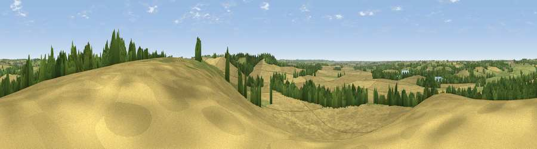

Viewpoint near South Kilworth
#31607 in England · top 40% of its area beats it · near South Kilworth · access?Where it is
The exact computed spot (SP 61925 80325). Click the marker for map links.
Public access: no public right of way or access land is recorded at this exact spot — it may be on private land. Computed from Natural England's CRoW access layer and OpenStreetMap rights of way — not the legal definitive map. Always verify locally.
The view, rendered

A 360° render of this exact spot computed from the terrain model, tree cover and land cover — summer colours, afternoon light, calibrated against photographs of famous viewpoints. Real trees, hedges and buildings will differ in detail.
The panorama
Grey silhouette: terrain skyline in each direction (720 bearings, Earth curvature and refraction included). Dashed green: skyline with trees (+15 m) and buildings (+8 m) as obstacles. Blue strip: how far the ground is visible on each bearing.
Where the view opens
Wedge length = distance to the farthest visible ground on that bearing (vegetation-aware). Rings at 10, 25 and 50 km.
What fills the view
67% cropland · 21% grassland · 10% woodland · 1% water ·
Angular shares of the visible panorama (visual magnitude), not map area. Landscape diversity 0.40 (0–1 Shannon).
Key numbers
More beautiful places nearby
The staircase of upgrades: each row has a higher view potential than everything closer. Driving times are estimates from straight-line distance, calibrated against real road routing — check an actual route before setting out.
| Place | Direction | Drive | Score |
|---|---|---|---|
| Viewpoint near Cold Ashby | SSE · 4 km | ~9 min | 61.7 |
| Big Hill - Staverton Clump | SSW · 20 km | ~34 min | 68.4 |
| Old John | NNW · 32 km | ~50 min | 70.3 |
| Broombriggs Hill | NNW · 35 km | ~54 min | 74.4 |
| Viewpoint near Woodhouse Eaves | NNW · 36 km | ~55 min | 77.7 |
| Viewpoint near Elmley Castle | WSW · 76 km | ~100 min | 80.5 |
| Bredon Hill | WSW · 77 km | ~101 min | 83.0 |
| Viewpoint near Great Witley | W · 88 km | ~112 min | 83.4 |
52.41742, -1.09092 · source: screening · position refined by local search. Computed location — check access rights before visiting.